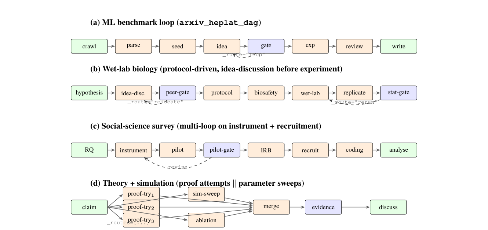
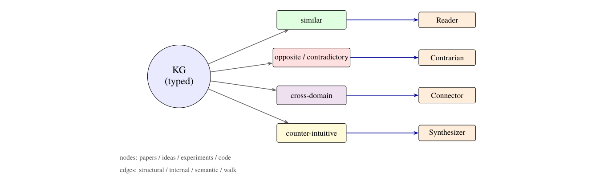
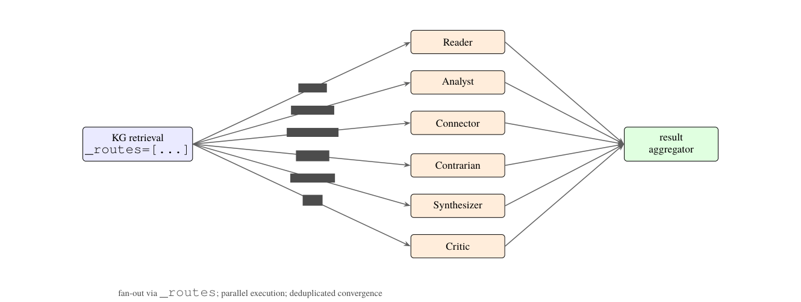
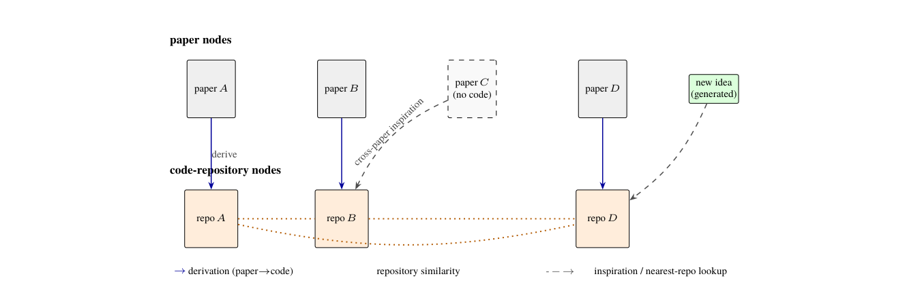
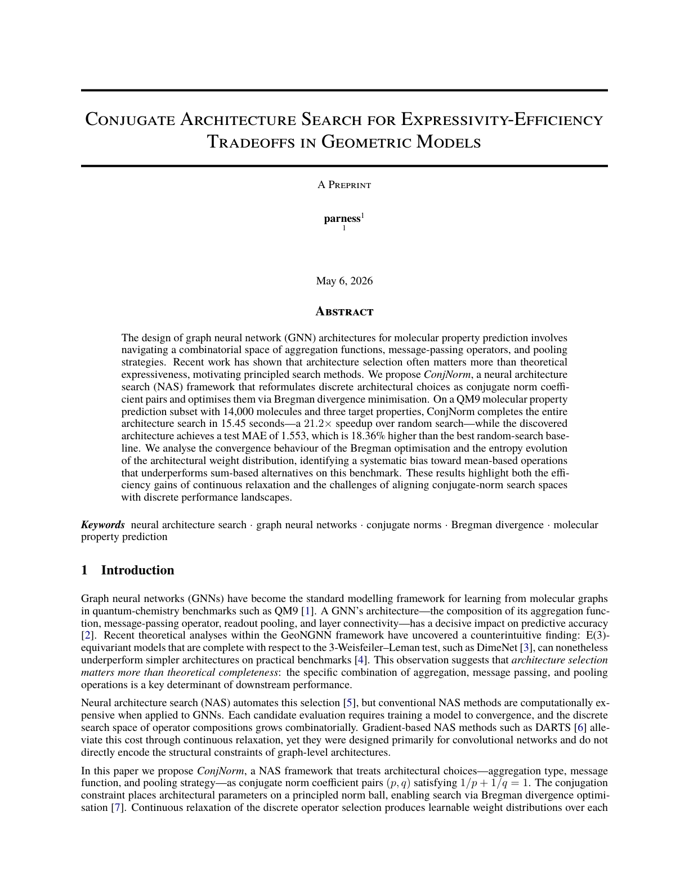

论文里有"六个认知角色协作"
论文 Fig. 12 画了六个认知角色（Reader/Analyst/Connector/Contrarian/Synthesizer/Critic）并行工作、各自消费 KG 的不同场景切片、聚合器去重排序的图。
当"161 个模块"遇见"70 个从未被任何 pipeline 引用"——一篇野心远大于证据的系统论文 vs 它自己的仓库
真实身份（抛开论文叙事）：一个学生（大概率大量借助 coding agent 生成）为科研场景重造了一个 LangGraph 式编排引擎，外挂 Neo4j 记忆层，端到端跑通过一次（产出一篇报告自身 MAE 退化的机器论文），然后为它写了一个野心远大于证据的学术包装。真正有的东西：一条真实跑通的「PDF→解析→入库→知识图谱」主干（约 1.76 万篇论文的语料级运行痕迹），一个跨运行持久化的概念框架。没有的东西：任何一个核心假设的验证、论文宣称的三大卖点中的两个（场景化检索、paper↔code 图）在代码里根本不存在、任何用户、任何影响力。
PARNESS 的论文（31 页）讲了五个痛点、四个设计动作、八阶段索引、场景化检索、认知角色、paper↔code 图、跨运行累积——是一套相当完整的科研 agent 基建蓝图。下面这张图来自论文 Fig. 2，展示了它宣称的"同一 DSL 表达四种学科循环"。

论文写 5 个 SQLite 库，代码只有 3 个（另两个被重构合并，但重构脚本没被清理）；论文写 50 条 pipeline，仓库只有 38 条；论文写 553 个测试，仓库零测试文件；论文写"场景化检索"和"paper↔code 图"，代码里这两个机制根本不存在；论文写"认知角色 × KG 场景切片"，代码里角色不接 KG、场景只是字符串。这不是"简化版"，而是论文在描述一个代码里没有实现的系统。
学界反响（截至 2026-08-04 实查）：未中稿——arXiv 仍是 v1，无 journal-ref、无接收记录，三个月未出修订版。引用：OpenAlex 0 次，Semantic Scholar 仅 1 篇（同类预印本 ResearchLoop）。社区：GitHub 9★ / 0 fork / 0 issue，发布一个多月后（2026-06-15）即停止 push；从未登上 HuggingFace Daily Papers。工程体量与影响力严重倒挂。引用姿势：适合在 related work 里作为"工程系统"一句带过，不宜当作需要正面比较的公认 baseline。
先解释名词："调度内核"就是"流程图引擎"——系统里有几十个模块（爬论文、解析 PDF、生成 idea、跑实验、写论文），谁先跑、谁后跑、失败了重不重试、评分不够要不要倒回去重新想，回答这些问题的代码就是调度内核。在 PARNESS 里它就是 graph_runner.py 这一个文件（686 行）。论文把它当最大卖点之一，我们用三个问题来看清它。
输入一份 YAML 流程图（例如 crawl → parse → idea → gate → experiment → write），做三件事：
对照主流 agent 编排框架 LangGraph，它实现的是其一部分功能，且质量更差：
| 功能 | LangGraph | PARNESS |
|---|---|---|
| 条件分支 | conditional edges（成熟） | _route 字段（低配版：误路由不报错） |
| 一对多 fan-out | Send API（可用） | _routes 字段（全库无任何模块用过，纯死代码） |
| 状态持久化 / 断点续跑 | checkpointer | 没有 |
| 有效逻辑量 | — | 约 300 行（686 行里其余是隔离、重试、日志） |
唯一超出教科书的部分是子进程隔离的 40 行（_worker_execute + _subprocess_main）：工作跑在 daemon 线程、主线程保证走到 os._exit(0) 强退——这是被 PyTorch/PaddleOCR 残留线程挂死的真实事故打磨出来的代码，是全文件最有"实战包浆"的部分。
① 跑一半被截断，却报告"成功"：所谓"迭代轮数 max_rounds"其实是流程推进的步数上限（config 里 max_rounds: 8000 的 YAML 证实作者自己也知道"round=步"）。触顶后只打一条 warning 就跳出，结果判定只看"有没有节点抛异常"——一条 100+ 层的流水线被无声截断，仍报告 success。
② 路由写错，静默走岔：模块返回的 _route 指向不存在的节点——静默丢弃；写了个 routes 表里没有的 key（typo）——静默落入 default 分支。误路由全程零报错。
③ 隐式依赖的节点，第二轮后再也不被调度：只写了 input_mapping 没写 depends_on 的节点，排序时算进了图，但推进逻辑只沿 depends_on 找下游——第一轮之后永远轮不到它。
④ GPU 最常见的死法会挂死整个系统：子进程被 OOM-killer 杀掉时队列永远等不到数据，而默认没有 timeout——整个编排器无限挂起。为 GPU 隔离设计的机制，在 GPU 最典型的故障下失效。
死代码清单（写了但从没被走过的路径）：① _routes fan-out（132 个 adapter 零使用）；② IterationEdge 的 condition/priority/backtrack 四字段（runner 从不读 edges）；③ ConditionEvaluator（从未实例化）；④ 旧迭代框架 controller/gate/rules/memory 约 1400 行（只被 __init__ re-export）。一句话：这个内核是一个 300 行有效逻辑的简化版 LangGraph，唯一扎实的是子进程隔离，所有失败模式的共同点是"看起来成功了"。
论文用了"多智能体协作"、"认知角色"、"agent"这些词，但代码里实际跑的是：把一堆 Python 函数按 YAML 里的顺序排好，前一个的输出传给后一个，有些函数内部会调一次 LLM——仅此而已。
idea_generation_loop.yaml 这条 pipeline 的模块链是：
从 SQLite 拉论文（确定性函数，不调 LLM）
调一次 LLM："Generate 5-10 ideas, return as JSON"（generator.py:146-174）
再调一次 LLM：给 idea 打分（novelty/feasibility/impact 三维）
一个 if score >= 7.0 的判断（确定性函数，不调 LLM）
数一下够不够，不够就告诉编排层"回到 idea_generator 再来一轮"
导出 JSON
每个模块就是一个 Python 函数（async execute(inputs) -> dict），编排层做的事就是：跑完一个函数，把它的输出传给下一个函数。所谓"agent"就是一个函数内部调了一次 LLM API——没有角色、没有对话、没有记忆、没有工具调用。
论文 Fig. 12 画了六个认知角色（Reader/Analyst/Connector/Contrarian/Synthesizer/Critic）并行工作、各自消费 KG 的不同场景切片、聚合器去重排序的图。
六个角色的 prompt 确实存在（见第⑤节），但只有 analyst 被用过 1 次（且直接吃 PDF 解析输出，不碰 KG）。实际跑的是单体 idea_generator——一条大 prompt 调一次 LLM，生成 5-10 个 idea。"多智能体协作"只存在于论文的图里。
装饰品案例：代码里有个 src/conversation_manager/ 目录（context/message/memory/manager），看起来像是"多智能体对话系统"。但全仓库没有任何 pipeline 或模块 import 它（grep 零命中）——它是从别处拷来的一个独立小包，没有接进编排层。典型的"看起来该有所以有，但从未被用过"的装饰品。
| 维度 | 真正的多智能体系统 | PARNESS 的编排层 |
|---|---|---|
| 角色 | 有（"产品经理"、"工程师"、"测试"） | 没有——只有"函数" |
| 对话 | 有（agent 之间发消息、讨论、协作） | 没有——只有"数据传递"（前一个函数的输出传给后一个） |
| 记忆 | 有（每个 agent 记得之前说过什么） | 没有——每次调用 LLM 都是独立的，不记得之前说过什么 |
| 工具调用 | 有（agent 可以决定调用哪个工具） | 没有——每个函数内部是固定的逻辑（要么调 LLM，要么做确定性计算） |
PARNESS 的编排层不是多智能体系统，就是一个"函数调用链"——把一堆函数按 YAML 里的顺序排好，前一个的输出传给后一个，有些函数内部会调一次 LLM。所谓"多智能体协作"只存在于论文的图里，代码里实际跑的是单 LLM 单 prompt 生成 + 一堆确定性小工具（if 判断、计数、导出）。
论文宣称"130+ 注册模块"，实测注册表 _ADAPTERS 有 161 条、adapters 目录 132 个文件。但这只是故事的三分之一。
38 个 pipeline YAML 合计只引用了 91 个不同模块；70 个（43.5%）注册后没有任何 pipeline 用过。使用频次高度长尾：91 个被用模块中 48 个只出现 1 次。
~30 个是 LLM 代理纯转发壳（51-70 行，真逻辑 ≤15 行）；crawler_adapters 一个文件贡献 24 个复制粘贴壳（INPUT_SPEC 逐字节相同）；~50 个是 70-160 行的确定性小工具。只有 6 个文件超过 300 行。
_ADAPTERS（161 条 name→类映射）+ get_all_module_specs()（1158 行手抄重复元数据）+ adapter 类身上的 INPUT_SPEC/OUTPUT_SPEC——三套互不引用、互不校验一致性。这是 agent 分批生成、每次按当时需要新起一层的典型堆积纹理。
整族阵亡名单（全部 0 引用）：① 认知角色 5/6（reader/connector/contrarian/synthesizer/critic）；② 12 个"新 agent"（adversarial/hypothesis/evidence/critique/theory/replication/transfer/meta_analysis/follow_up/limitation）；③ LaTeX 论文链 6 连（outline/section_writer/coherence_checker/formatter/persist + reference 5 件套）；④ 图像链 3 连；⑤ 5 个迭代控制器（threshold/patience/improving/llm/multi_criteria）+ quality_scorer + result_aggregator——README 引以为傲的"可插拔迭代控制"，实际 pipeline 只用了 hardcode 的 round_controller 和 idea_counter；⑥ 24 个 crawler 里 12 个 0 引用。
真实身份：这个项目真实身份是一条跑通了的「PDF→解析→入库→KG」流水线。高频被引用的模块（paper_search_persist、pdf_download 各 35 次）来自脚本生成的同族 YAML（gen_paper_search_yaml.py）；git 后续 commit 加的是 KG 语料清单和生成的 idea 工件（十几万行 JSON），说明真实被跑通的是 KG/爬虫/PDF 解析这一支，其余模块是为论文里"161 modules"这个数字存在的。
论文把知识图谱当成最大卖点之一，说它能"跨运行积累知识"、能"按场景切换不同找法"（找相似的/找矛盾的/找跨领域的/找反直觉的）。但代码里，这套系统实际上只会做一件事：用向量相似度找"长得像"的文本片段。
每篇 PDF 被解析后，切成几十个小块（段落/表格/公式），每块存成一个节点（KGNode）。节点里只有：原文文本 + 一个 2560 维的向量（embedding）+ 来源信息（哪篇论文、哪一页）。没有"方法"、"数据集"、"结论"这样的结构化实体——所谓"四类节点"（论文/idea/实验/代码仓库）在代码里只是 source_type 字段的四个字符串，没有对应的 schema 或属性。
边有两种来源：① 结构边——从 SQLite 直接复制外键关系（比如"这个 idea 属于这篇论文"）；② LLM 判的边——把两个文本片段喂给 LLM，让它判"支持/矛盾/扩展/用同一方法"（edge_builder.py 的 prompt 里列了 7 个可选标签）。边的"语义"完全是 LLM 单次调用的输出，没有任何验证。
论文画了八阶段流程图（抽取→去重→向量化→写节点→找内部关系→找结构关系→找语义关系→随机游走），看起来很像一个精密的流水线。但代码里：
kg_ingest.yaml 这条八阶段 pipeline 没有任何驱动脚本或产物证明大规模跑过。实际跑的是另一条 paper_intra_index.py（954 行，docstring 明写"replaces the legacy three-round chunker"）——单次 LLM 调用同时抽单元和关系，不走八阶段分解。八阶段是论文叙事，"一遍过"是代码实况。
papers/categorical_kg_idea_mining/inputs/ 里有 1.76 万篇全文论文 + 9 千篇摘要的清单（S2 id + 标题），artifacts/ 里有一次完整运行的产物（6,039 条 proposals，带 token 估算和随机种子）。KG 确实被真实灌过、跑出过实验——但产出这些产物的代码不在仓库里（只有结果快照）。
论文 Fig. 7 画了一张很漂亮的图：四种检索预设（similar / opposite / cross-domain / counter-intuitive）分别供四个认知角色调用。但代码里：
核心判定：四场景预设在代码中不存在。
src/ + config/ 里零字符命中——这两个词在代码里根本不存在。kg_synthesize.py:18），换成任何词检索行为一字不变。查询侧从头到尾只有一条路：把查询文本转成向量 → 在 Neo4j 里找最相似的 k 个片段 → 可选地沿图走几步扩展邻居 → 去重返回。不存在按"场景"切换的任何机制——不是简化，不是 prompt 化，是没有。

论文说六个认知角色（Reader/Analyst/Connector/Contrarian/Synthesizer/Critic）各自消费 KG 的不同场景切片。但代码里：
六个角色的代码确实存在，prompt 也各有针对性（见第⑤节）。但它们的输入全部是 pipeline 上游传入的 Python 列表（papers/insights），没有任何一个角色文件或其 adapter 调用 KG 检索。KG 检索模块存在（kg_vector_search 等），但它们只出现在 4 个纯 KG pipeline 里，没有任何一条边把 KG 输出接到任何认知角色。
在 38 个 pipeline YAML 里，reader/connector/contrarian/synthesizer/critic 五个角色零引用，只有 analyst 被用过 1 次（且直接吃 PDF 解析输出，不碰 KG）。"角色 × 场景绑定"只存在于论文的图里。
八阶段增量索引、双向量索引、随机游走、provenance 溯源、边衰减剪枝、27 表 SQLite→KG 重建——设计文档级的完备度，明显是精心 prompt 出来的架构。
Neo4j 存储层扎实（防注入白名单、带真实调试注释）、随机游走是真算法、爬虫是真 API 客户端；但八阶段被废弃、四场景预设不存在、CITES 边是 no-op、"vector_store"退化为关键词重叠。
KG 确实被灌过 1.76 万篇全文并跑出过实验（有备份/统计/续跑脚本佐证）。但被使用的路径是 paper_intra_index + cross_paper_discover + 一个不在仓库里的 idea-mining 管线；论文叙事管线（八阶段、场景化检索、认知角色×KG）无使用证据。
论文宣称"六认知角色（Reader/Analyst/Connector/Contrarian/Synthesizer/Critic）+ 十二专长 agent，各自消费知识图谱的不同场景切片"。
六角色的 prompt 不是同一模板改两句话：Reader 逐篇压缩成 7 字段 insight、Analyst 做聚类和 gap 分析、Connector 用 Jaccard 词集重叠筛"半相关"对再让 LLM 找类比、Contrarian 专门吃 Reader 输出的 assumed_but_not_proven 字段做假设反转。这部分设计是认真做过的。
六角色的输入全部是 pipeline 上游传入的 Python 列表（papers/insights），没有任何一个角色文件或其 adapter 调用 KG 检索。"角色 × 场景绑定"只存在于论文的图里。且 5/6 角色零 pipeline 引用，12/12 专长 agent 全部零引用——实际跑的 idea 链路是单体 idea_generator 一条大 prompt（"Generate 5-10 ideas, return as JSON"）。
假实现实锤：src/reviewers/ 三个评审器调完 LLM 把响应扔掉，返回硬编码的 7.0 分和"论文整体质量良好，有一定创新性"；rebuttal 模块对每条审稿意见返回硬编码"感谢审稿意见，我们将根据建议进行修改"。典型的 agent 生成占位代码，从未被人读过第二遍。quality gate 全貌：(novelty+feasibility+impact)/3 ≥ 7.0 的一次 if 比较，解析失败一律给 5.0 分。

论文说"代码仓库成为图谱一等公民，带 derivation 边 + 仓库相似边，无码论文借兄弟仓库找实验方案"。这是论文自称最有原创味的机制。
三层判定：① 设计层：有（三段式蓝图完整——提取→克隆→分析）；② 实现层：半成品拼盘（URL 提取就是 regex、克隆"沙箱"就是 git clone + 超时、"类型化仓库文件树"是文件名关键词启发式 + AST）；③ 使用层：零（code_link_extractor 全仓库零调用者、无 pipeline 引用、无运行产物）。论文宣称的 derivation 边/仓库相似边/借兄弟仓库属于纯论文叙事，代码中无对应物。实际只有 SQLite FTS5 关键词检索 + 固定 0.5 分。

论文没有 benchmark，取而代之的"能力展示"是两份产物：附录 A 的 idea 目录，和附录 B 整篇嵌入的机器生成论文（QM9 实验，报告 18.36% MAE 退化）。
papers/categorical_kg_idea_mining/ 里有一次完整运行的输入（1.76 万篇全文 + 9 千篇摘要清单）与产物（C1-C4 四条件的 proposals/families JSONL+CSV，6,039 条 proposals，带 token 估算和随机种子）。这种颗粒度不像编造——但产出这些产物的代码不在仓库里（只有结果快照），可复现性为零。
QM9/18.36% MAE 在整个仓库零痕迹：无实验 workspace、无 results.json、无生成的 PDF。那篇机器生成论文的全部证据链都在被 gitignore 的 output/ 里，外部无法核验其存在。且 .gitignore 吞掉了 .opencode/ agent 定义文件——三个 CLI 的 workspace 构建都要拷贝这些模板，按提交状态任何人 clone 后跑 runner/verifier/paper_cli 都会 FileNotFoundError。

一个学生（大概率大量借助 coding agent 生成）为科研场景重造了一个 LangGraph 式编排引擎，外挂 Neo4j 记忆层，端到端跑通过一次（产出一篇报告自身 MAE 退化的机器论文），然后为它写了一个野心远大于证据的学术包装。
八阶段增量索引、双向量索引、随机游走远程发现、retrospect 补边、provenance 溯源、边衰减剪枝、27 表 SQLite→KG 重建——设计文档级的完备度，明显是精心 prompt 出来的架构。
Neo4j 层、随机游走、cross_paper_discover、爬虫是真实且有调试痕迹的实现；但八阶段管线被废弃、四场景预设不存在、code-link 链零接线、reviewers/rebuttal 是假实现、llm_dispatcher 零调用、provider 层带着从未触发过的 TypeError 级 bug。
KG 确实被灌过 1.76 万篇全文并跑出过四条件实验（有备份/统计/续跑脚本佐证运维发生过）。但被使用的路径是 paper_intra_index + cross_paper_discover + 一个不在仓库里的 idea-mining 管线；论文叙事管线（八阶段、场景化检索、认知角色×KG）无使用证据。
对本调研方向的可借鉴点（限正面）：① 子进程隔离的 40 行（daemon 线程 + os._exit）是真实可用的工程模式；② DB schema 层的规范化设计（81 表、UNIQUE 去重、upsert 保旧值）可作参考；③ "PDF→解析→入库→KG"这条主干证明这条路能走通，但用的是更粗暴的"一遍过"路线而非论文宣称的八阶段；④ 反面教材：placeholder 静默降级 + 以"控制流跑通"当验证，示范了系统类论文如何在不撒谎的前提下让证据显得比实际厚——审读同类系统时可作对照检查项。